Unreal Engine - materiały dla kursantów
Unreal Engine - animacje cz. 2
Streszczenie
Na tych zajęciach rozwijamy temat animacji postaci. Poznamy MetaHuman, zobaczymy, jak z nagrania wideo przygotować animację humanoidalnej postaci, sprawdzimy, czym jest szkielet i socket, a następnie wykorzystamy Animation Montage do podlewania grządki oraz tworzenia pola pod nogami gracza.
MetaHuman
MetaHuman to system Epic Games do tworzenia realistycznych cyfrowych ludzi. Zamiast modelować twarz, włosy i ciało od zera, możemy skorzystać z gotowych baz postaci, a potem dopasować je do własnego pomysłu.
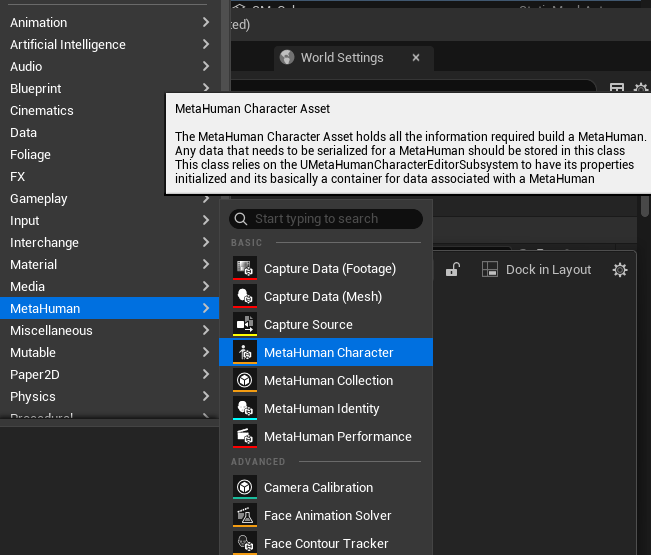
MetaHuman pozwala wybrać kilka gotowych postaci i zapożyczać elementy ich wyglądu do naszej postaci. Dzięki temu możemy mieszać rysy twarzy, fryzury, proporcje i inne cechy, zamiast zaczynać od pustej sceny.
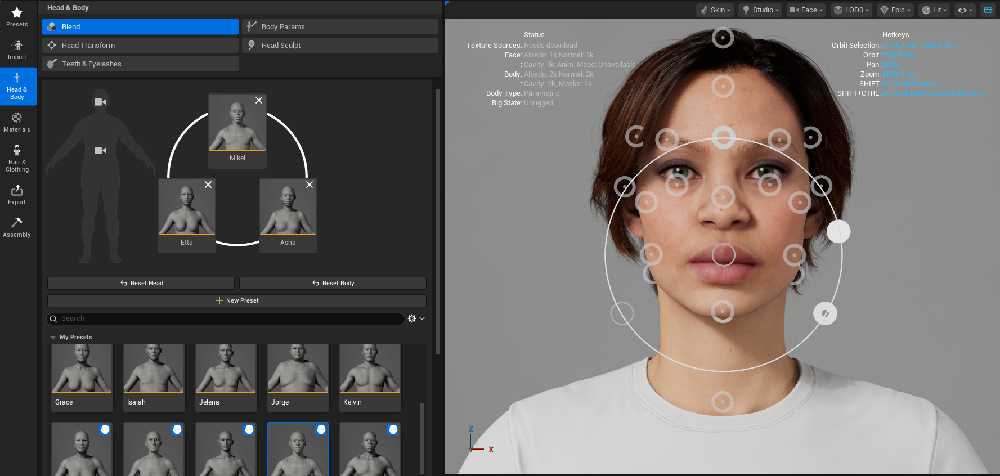
Tworzenie własnej animacji
Od wersji 5.8 Unreal Engine udostępnia możliwość tworzenia animacji dla humanoidalnych Pawnów za pomocą nagrań. Oznacza to, że ruch wykonany przed kamerą może zostać przetworzony na animację, którą później uruchomimy na postaci w projekcie.
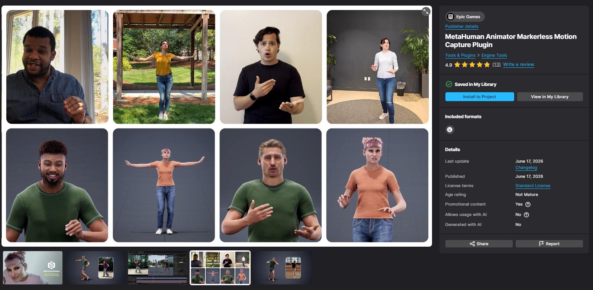
Przygotowanie animacji z nagrania
-
Zainstaluj wtyczki dla MetaHuman. Są potrzebne, aby Unreal Engine mógł obsłużyć narzędzia do przechwytywania
ruchu i przetwarzania nagrania.
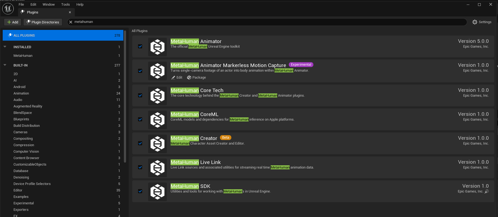
-
Otwórz Live Link Hub. To osobne narzędzie, które pomaga przygotować dane z nagrania do
dalszej pracy w Unreal Engine.
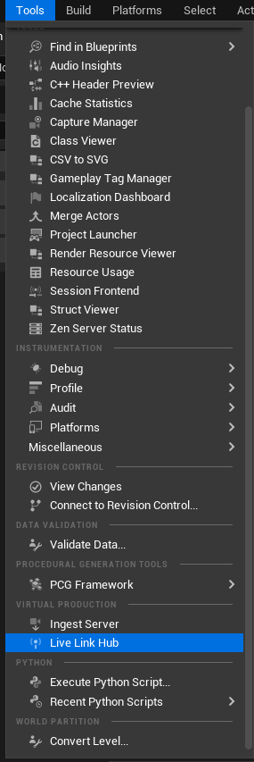
-
W Live Link Hub ustaw Capture Management, dodaj Mono Video Ingest, ustaw
katalog z nagraniami w polu Take Directory, wybierz wideo, dodaj je do kolejki przetworzenia,
a potem uruchom kolejkę.
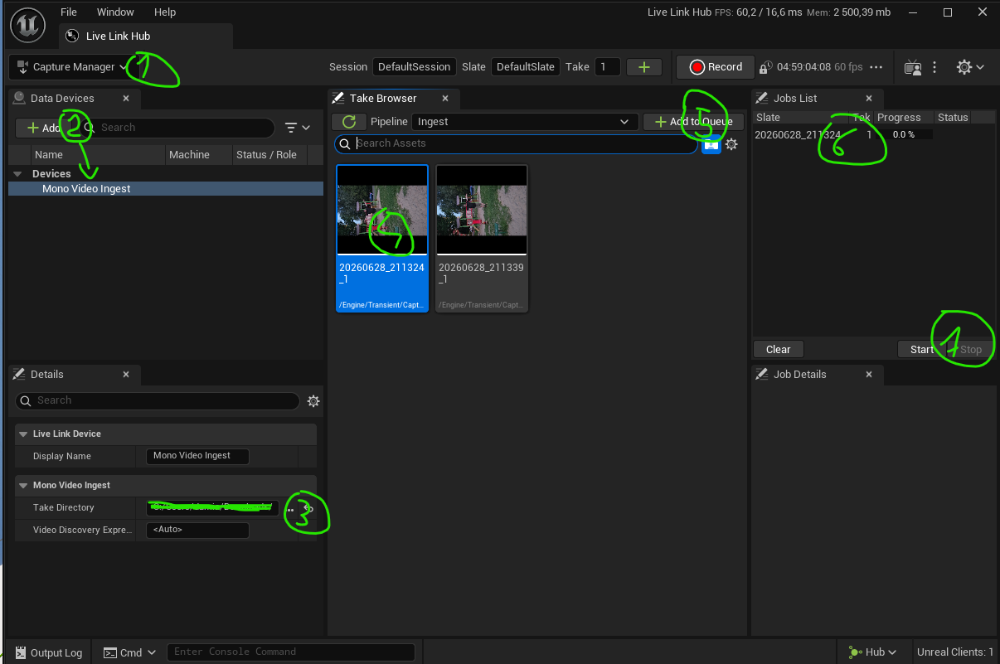
-
W Capture Managerze sprawdź przygotowane ujęcie i dane przechwytywania.
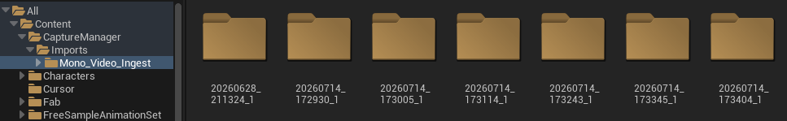
-
W każdym katalogu utwórz MetaHuman Performance. Ten zasób będzie odpowiadał za przetworzenie
ruchu z nagrania na dane animacji.
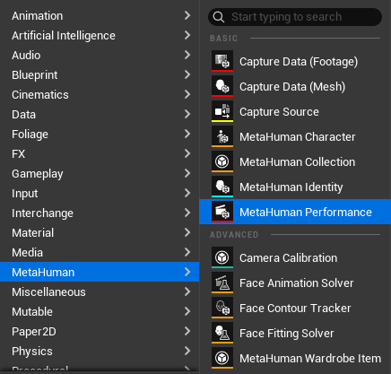
-
Ustaw wygenerowany Capture Data w polu Footage Capture Data, zaznacz
Body Tracking, a w Visualization Object wybierz stworzonego MetaHumana.
Jeśli go jeszcze nie masz, utwórz go wcześniej. Wciśnij Process, a gdy przetwarzanie się
skończy, wybierz Export Animation.
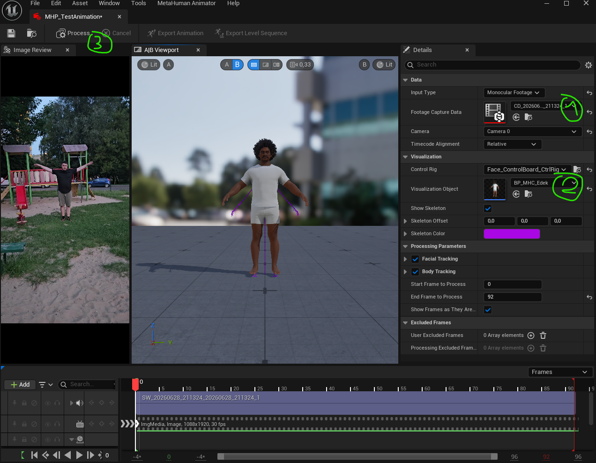
-
Na utworzonym w ten sposób zasobie MetaHuman Performance wybierz
Retarget Animation, a następnie wskaż nasz szkielet, na przykład
SKM_Quinn_Simple.
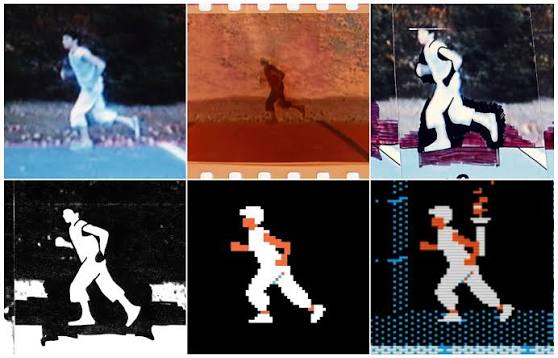
Szkielet
Szkielet w Unreal Engine działa podobnie jak szkielet w ciele człowieka, tylko jest ukryty wewnątrz modelu 3D. Składa się z kości połączonych w hierarchię: kość dłoni jest podłączona do przedramienia, przedramię do ramienia, a głowa do szyi. Gdy poruszamy kośćmi, porusza się też widoczny model postaci.
Szkielet jest potrzebny, żeby różne animacje mogły działać na tej samej postaci. Animacja nie zapisuje osobno ruchu każdego punktu modelu, tylko mówi kościom, jak mają się przemieścić i obrócić w czasie.
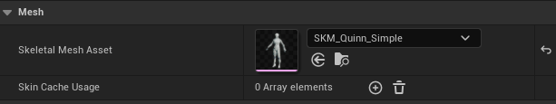
Szkielet naszej postaci możemy znaleźć, otwierając nasz Character i zaglądając w pole Skeletal Mesh Asset.
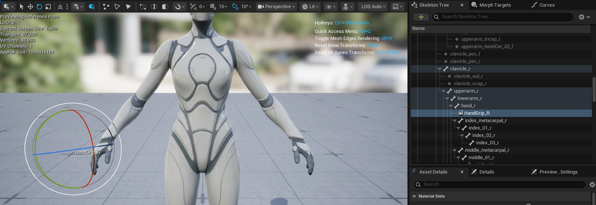
Socket w szkielecie to punkt zaczepienia przypisany do konkretnej kości. Możemy myśleć o nim jak o małym uchwycie na dłoni, plecach albo głowie postaci. Do takiego socketu da się przypiąć przedmiot: na przykład konewkę, miecz, szpadel albo kapelusz.
Podlewanie grządki
Gdy wejdziemy na pole, włożymy w dłoń postaci konewkę i uruchomimy animację podlewania.
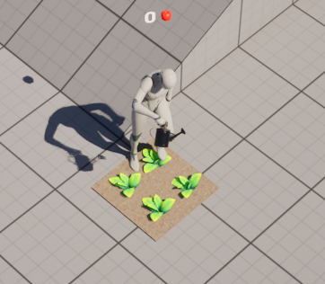
Blueprint pola wykrywa wejście gracza w obszar kolizji. Następnie może uruchomić logikę odpowiedzialną za pokazanie konewki w dłoni i odtworzenie animacji podlewania na postaci.
BP_Field
Użyźnienie ziemi
Stworzymy akcję na E, która uruchomi animację kopania szpadlem. Aby uprościć przykład, zrobimy to bez spawnowania szpadla. W połowie animacji stworzymy pole pod nogami gracza.
Montage pozwala nam wysłać do Blueprinta notyfikację w wybranym miejscu animacji. Można tak wykonać na przykład combo ataków albo ustawić okno nieśmiertelności podczas uniku.
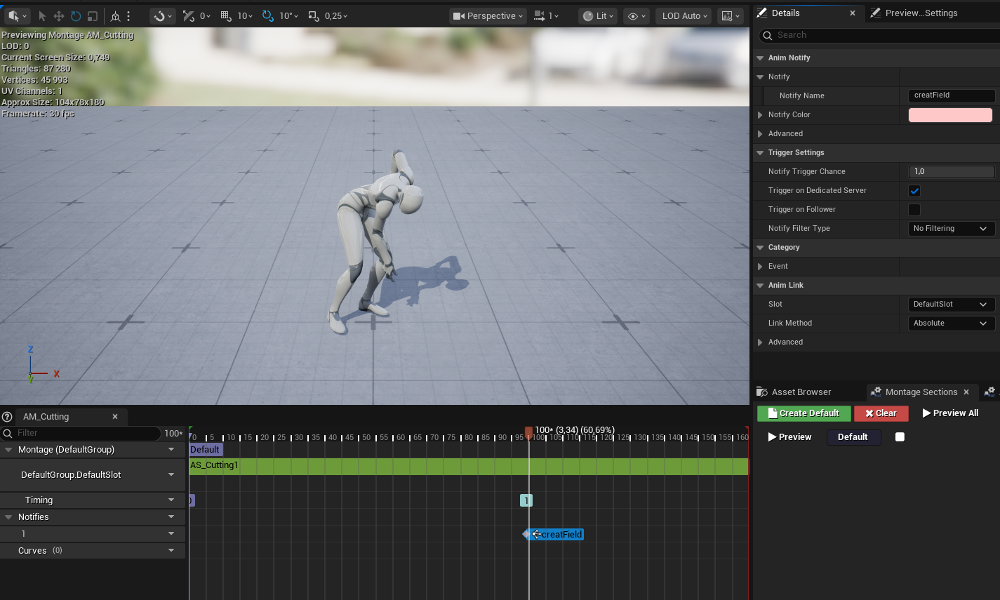
Gdy animacja dojdzie do wyznaczonego punktu, uruchomi On Notify Begin w nodzie Play Montage. W polu Notify Name znajdziesz nazwę notyfikacji, dzięki czemu można je rozróżniać, gdy w jednej animacji jest ich więcej.
BP_TopDownCharacter
Quiz
1. Do czego służy MetaHuman?
2. Co jest potrzebne, aby przygotować animację z nagrania?
3. Czym jest szkielet postaci w Unreal Engine?
4. Co zapisuje animacja postaci?
5. Do czego służy socket w szkielecie?
6. Kiedy przydaje się Animation Montage?
7. Po co dodajemy notyfikację w Montage?
8. Gdzie w Play Montage pojawia się nazwa uruchomionej notyfikacji?
9. Co uruchamia podlewanie grządki w tym przykładzie?
10. Dlaczego samo nasłuchiwanie na klawisz E nie jest najlepszym rozwiązaniem?
Zadanie
Dodaj szpadel do przykładu „Użyźnienie ziemi”. Nie poddawaj się, gdy pojawi się frustracja. Trzymam za Ciebie kciuki.
Materiały
 Animacje, które działają lepiej niż god mode
Materiał o tym, jak animacje wpływają na odbiór sterowania, akcji i mocy postaci w grach.
Animacje, które działają lepiej niż god mode
Materiał o tym, jak animacje wpływają na odbiór sterowania, akcji i mocy postaci w grach.
 Jak twórcy gier oszukują w animacjach
Przykłady sprytnych uproszczeń, dzięki którym ruch w grach wygląda lepiej, niż wynikałoby to z samej symulacji.
Jak twórcy gier oszukują w animacjach
Przykłady sprytnych uproszczeń, dzięki którym ruch w grach wygląda lepiej, niż wynikałoby to z samej symulacji.
 Animowanie twarzy w grach wideo
Materiał o mimice, ekspresji i technikach, które pomagają ożywić twarze postaci.
Animowanie twarzy w grach wideo
Materiał o mimice, ekspresji i technikach, które pomagają ożywić twarze postaci.
 L.A. Noire - animacja twarzy jako główna mechanika
Przykład gry, w której odczytywanie mimiki i zachowania postaci stało się ważną częścią rozgrywki.
L.A. Noire - animacja twarzy jako główna mechanika
Przykład gry, w której odczytywanie mimiki i zachowania postaci stało się ważną częścią rozgrywki.
 Animacje AI w ARC Raiders
Fragment o tym, jak animacje przeciwników pomagają graczowi zrozumieć intencje i stan postaci sterowanych przez AI.
Animacje AI w ARC Raiders
Fragment o tym, jak animacje przeciwników pomagają graczowi zrozumieć intencje i stan postaci sterowanych przez AI.